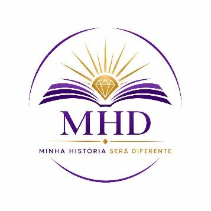
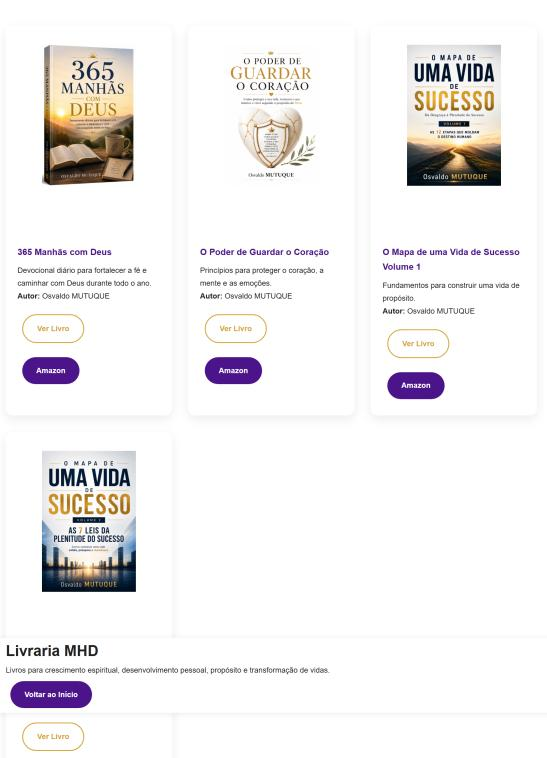

Osvaldo MUTUQUE é engenheiro, investigador e autor. É fundador do projeto MHD – Minha História Será Diferente, através do qual desenvolve livros e conteúdos dedicados ao crescimento espiritual e humano.
A sua missão é partilhar conhecimento, de forma simples e fiel às Escrituras, princípios que ajudem homens, mulheres e famílias a conhecer melhor a vontade de Deus e a vivê-la no seu dia-a-dia.
É autor das obras O Poder de Guardar o Seu Coração, O Mapa de uma Vida de Sucesso e O Que é o Casamento?, todas orientadas para o fortalecimento da fé, do carácter cristão e da compreensão dos princípios bíblicos.
Acredita que a Palavra de Deus continua a ser o fundamento seguro para transformar vidas, fortalecer famílias e preparar pessoas para cumprirem o propósito para o qual foram criadas.
Descubra mais…

